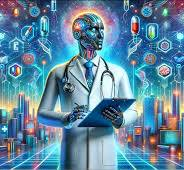

"Revolutionizing Healthcare with AI"
1.How AI is Transforming Healthcare in 2025
Healthcare is experiencing a digital revolution, and at the heart of this transformation lies Artificial Intelligence (AI).
From predicting diseases before symptoms appear to personalizing treatment plans, AI is reshaping the way we think about medicine.
2.Early Diagnosis & Prediction
AI-powered tools can analyze medical records, imaging scans, and genetic data to detect potential risks early. For example, algorithms can now spot cancerous cells in X-rays more accurately than human radiologists.
3.Personalized Treatments
No two patients are the same. AI helps doctors tailor treatments based on individual genetics, lifestyle, and health history—improving recovery rates and reducing side effects.
4.Virtual Health Assistants
Chatbots and AI-driven apps now provide 24/7 medical guidance, appointment scheduling, and even mental health support. This reduces the burden on hospitals and improves accessibility.


"Our Core Healthcare Innovations"
Early Disease Detection